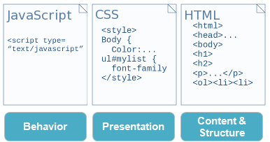

Css Nasıl Eklenir?
Bir tarayıcı açıldığı zaman stilleri okur ve o stilin kullanıldığı HTML elementlerini belirtilen özelliklere göre şekillendirir.
Üç şekilde sayfamıza stil ekleyebiliriz. Bunlar:
Stilleri CSS Dosyasından Çağırmak
HTML Sayfasında CSS Yazmak
HTML Elementinin İçerisinde Stil Belirtmek
1. Stilleri CSS Dosyasından Çağırmak
Öncelikle bir not defteri ya da CSS düzenleyici program açmalısınız.
CSS Kodlarınızı CSS Kod Yapısı'na uygun olarak yazın ve kaydedin.
HTML Sayfanızı açıp
